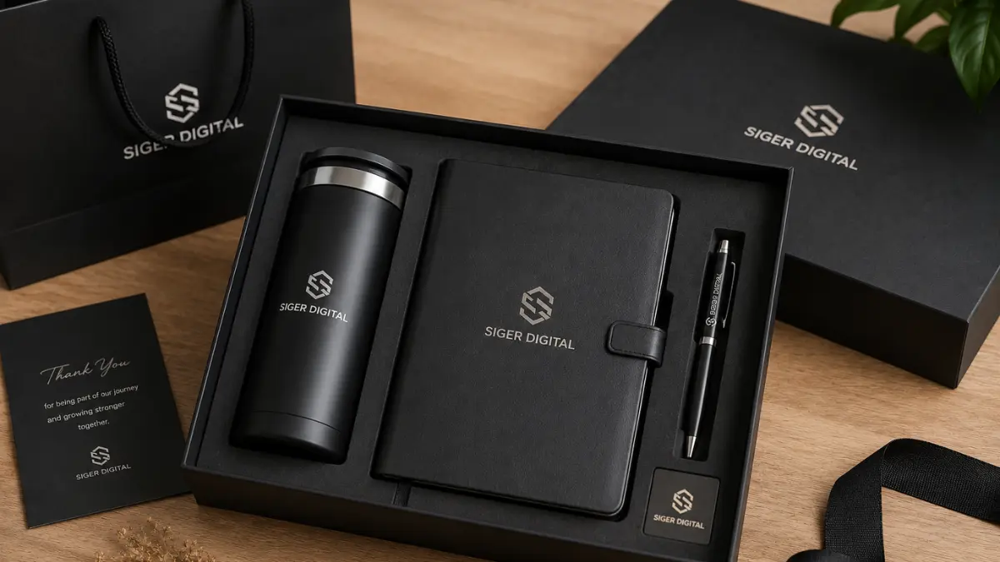

Rekomendasi Tumbler Custom Logo untuk Merchandise Kantor Premium
Tumbler custom logo tersedia dalam beberapa pilihan material yang cocok dijadikan merchandise kantor premium untuk klien maupun karyawan.
Material stainless dipilih karena tampilannya yang rapi serta daya tahan yang baik untuk penggunaan harian di lingkungan kerja.
- Tumbler stainless custom logo dengan finishing matte untuk kesan elegan
- Tumbler double wall custom logo untuk menjaga suhu minuman lebih lama
- Tumbler dengan tutup custom logo yang praktis dibawa saat bekerja
- Tumbler edisi terbatas custom logo untuk kebutuhan acara khusus Perusahaan
Rekomendasi Notebook Custom Logo untuk Corporate Gift
Notebook custom logo tersedia dalam beberapa pilihan cover yang cocok dijadikan corporate gift untuk klien maupun peserta seminar kit.
Pemilihan cover notebook dapat disesuaikan dengan tingkat formalitas acara, mulai dari cover polos hingga cover kulit yang lebih eksklusif.
- Notebook cover polos custom logo untuk kebutuhan seminar kit standar
- Notebook cover kulit custom logo untuk kesan lebih formal dan eksklusif
- Notebook dengan pembatas halaman custom logo sebagai pelengkap fungsional
- Notebook ukuran ringkas custom logo untuk merchandise yang praktis dibawa

Rekomendasi Pulpen Custom Logo sebagai Pelengkap Merchandise Kantor
Pulpen custom logo tersedia dalam beberapa varian yang dapat disesuaikan dengan komposisi paket merchandise kantor perusahaan.
Pulpen menjadi pelengkap wajib hampir setiap paket merchandise karena fungsinya yang praktis dan biaya produksi yang efisien untuk jumlah besar.
"Pulpen menjadi pelengkap wajib hampir setiap paket merchandise karena fungsinya yang praktis dan biaya produksi yang efisien untuk jumlah besar."
— Asher Angelica, Penulis Merchandise Kantor
- Pulpen metal custom logo untuk kesan lebih premium
- Pulpen plastik custom logo untuk kebutuhan distribusi jumlah besar
- Pulpen dengan stylus custom logo sebagai nilai tambah fungsional
- Pulpen set dua warna custom logo untuk variasi merchandise kantor
Paket Set Merchandise Kantor Premium Siap Custom Logo
Ketiga produk tumbler, notebook, dan pulpen dapat dipesan sebagai satu paket set merchandise kantor premium dengan cetak logo yang konsisten pada setiap produknya.
Paket set ini cocok digunakan untuk kebutuhan seminar kit, penghargaan karyawan, maupun corporate gift tahunan. Tim procurement dapat menyesuaikan jumlah unit, jenis kemasan, dan estimasi waktu produksi sesuai jadwal acara perusahaan.

Pesan Set Merchandise Kantor Premium Anda Sekarang
Lengkapi kebutuhan merchandise kantor premium perusahaan Anda dengan paket tumbler, notebook, dan pulpen custom logo kami. Konsultasikan kombinasi produk dan jumlah unit bersama tim kami sekarang.